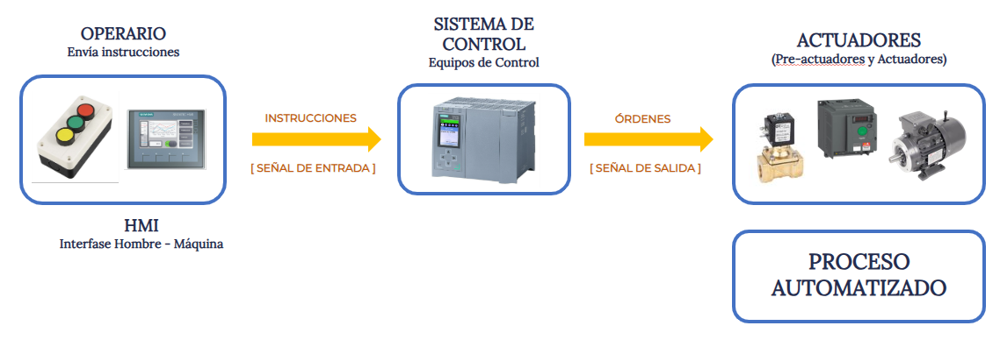

04. Tipos de Sistema, Medios y Señales
{kind=link}
{kind=link}
{kind=link}
{kind=link}
{kind=link}
Es fundamental conocer las características de los diferentes tipos de sistemas de control, la naturaleza de las señales de entrada y salida de un sistema, la diferencia entre señales digitales y analógicas, y la diversidad de sensores utilizados en la industria.
La comprensión de las señales y los sensores es esencial para la enseñanza de la automatización y el control industrial. La correcta identificación y uso de estos elementos permite desarrollar procesos más eficientes y precisos.
Tipos de Sistema | Señales de Entrada y de Señales de Salida
Los diferentes dispositivos de un sistema automatizado se comunican mediante el envío de señales a través del uso de alguna red de comunicación industrial. Dichas señales transmiten información en distintas formas, dependiendo del tipo de sistema en el que se utilicen:
- Señales analógicas:
Son aquellas que varían de forma continua en el tiempo. Este tipo de señales se encuentra en muchos sistemas de medición industrial.
Un ejemplo de aplicación clásico es la medición de la temperatura de un horno industrial. Para ello se utiliza algún tipo de sensor que mida la temperatura y convierta esa señal en una variación de voltaje: a medida que la temperatura varía, el voltaje de salida del sensor también cambia de forma gradual y sin interrupciones. Es esa señal de voltaje variable la que se envía al equipo de control. - Señales digitales:
A diferencia de las analógicas, las señales digitales no varían de manera continua, sino que adoptan valores discretos, generalmente binarios ("0" y "1" / “inactivo” y “activo”).
Un ejemplo de señal digital es un pulsador que presiona un operario para iniciar un proceso, o bien un sensor de contacto que sólo tiene dos estados: detecta o no detecta un objeto en posición.
Volvamos a revisar el esquema de un sistema automatizado:

En el mismo podemos ver que los equipos de control (un PLC en la figura de ejemplo), reciben como señales de entrada las instrucciones enviadas por un operario, que puede ser simplemente la activación de un pulsador de inicio de sistema, un pulsador de parada, o bien el ingreso de un valor de temperatura o de ciclos en un panel HMI.
De acuerdo a estas instrucciones y a la configuración/programación del equipo de control, éste último envía como señales de salida las órdenes hacia los Actuadores para comiencen sus ciclos de operación en el Proceso.
Este sencillo sistema de control se denomina LAZO ABIERTO DE CONTROL
En este caso, el sistema no recibe retroalimentación sobre su desempeño. Es decir, no llega al equipo de control ninguna información sobre el funcionamiento del Proceso en curso.
Un ejemplo de de un lazo abierto es una lavadora programada con ciclos fijos de lavado, enjuague y centrifugado. El controlador envía ordenes para cambiar el tipo de proceso y los actuadores responden, pero sin importar cuánta ropa hay, ni qué tan sucia estaba inicialmente.
Ahora bien, si se quisiera optimizar el funcionamiento del sistema, podríamos incorporar sensores que monitoreen el estado del proceso y envíen datos a nuestro equipo de control como nuevas señales de entrada para que el mismo reaccione según sea necesario.
 Nos encontramos en presencia de un LAZO CERRADO DE CONTROL.
Nos encontramos en presencia de un LAZO CERRADO DE CONTROL.
Este sistema cuenta con retroalimentación, lo que le permite ajustar su comportamiento en función de la respuesta del proceso.
Un simple ejemplo, es un aire acondicionado con termostato que mide constantemente la temperatura ambiente y ajusta su funcionamiento para mantener la temperatura deseada.
El control a lazo cerrado permite mayor precisión y adaptabilidad en los procesos industriales, mejorando la eficiencia y reduciendo errores.
Por supuesto su implementación requiere más dispositivos, más comunicación entre partes, y conocimientos más amplios para su implementación.
Señales de entrada: Son aquellas que un sistema recibe desde su entorno. Estas señales pueden provenir de sensores que captan información sobre variables físicas como temperatura,
presión o nivel. Por ejemplo, un sensor térmico dentro de una caldera mide constantemente la temperatura del agua y envía la información al sistema de control.
Señales de salida: Son respuestas que el sistema genera en función de la información recibida. Estas pueden accionar dispositivos como motores, válvulas o alarmas.
En el caso de la caldera, si la temperatura del agua supera el umbral establecido, el sistema puede activar un ventilador para enfriar el sistema o cerrar
una válvula de entrada de combustible.
La correcta interpretación y gestión de estas señales es clave para el buen funcionamiento de cualquier sistema automatizado.Obra publicada con Licencia Creative Commons Reconocimiento Compartir igual 4.0